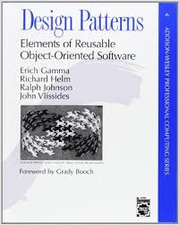
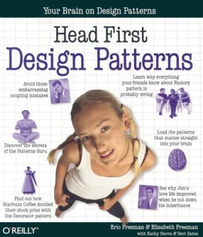
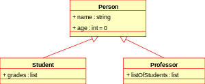
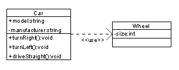

Design patterns & conception objet
Plan
- Les Design patterns, pourquoi ?
- Bibliographie sélective
- Rappels sur les associations et leur notation UML
- Liste des patterns par catégorie
- Principes d'une bonne conception objet
- Anatomie d'un Design pattern
Pourquoi les design patterns ?
- Raisons personnelles : m'améliorer
- Solutions (de base) à des problèmes de conception récurrents (boîte à outils)
- Solutions pérennes (indépendance à l'égard des technologies)
- Appréhender la philosophie objet (SOLID)
-
Grammaire commune
- Mieux comprendre le fonctionnement des frameworks que l'on utilise
- Mieux comprendre le code de ses collègues
- Mieux concevoir son code objet
Bibliographie sélective (1)
|  |
|
|  |
|
Bibliographie sélective (2)
|
||
Bibliographie sélective (3)
|
||

|
|
|
Rappels UML (relations)
|
|
| Héritage/Implémentation (is-a) |  |
| Dépendance (uses) |  |
| Source: Diagrammes de classe / relations | |
Les trois catégories de patterns
- Patterns de création
- Patterns structuraux
- Patterns comportementaux
Les patterns de création
| Abstract factory | Allows a client to create families of objects without specifying their concrete classes |
| Factory method | Subclasses decide which concrete classes to create |
| Builder | Encapsulate the construction of a product and allow it to be constructed in steps |
| Prototype | Creates objects by cloning an existing object |
| Singleton | Restricts object creation for a class to only one instance |
Les patterns structuraux
| Adapter | Allows classes with incompatible interfaces to work together |
| Bridge | Decouples an abstraction from its implementation so that the two can vary independently |
| Composite | Treat collections of objects and individual objects uniformly |
| Decorator | Wraps an object to provide new behavior |
| Facade | Simplifies the interface of a set of classes |
| Flyweight | Reduces the cost of creating and manipulating a large number of similar objects |
| Proxy | Wraps an object to control access to it |
Les patterns comportementaux
| Chain of Responsability | Delegates commands to a chain of processing objects |
| Command | Creates objects which encapsulate actions and parameters |
| Interpreter | Implements a specialized language |
| Iterator | Accesses the elements of an object sequentially without exposing its underlying representation |
| Mediator | Allows loose coupling between classes by being the only class that has detailed knowledge of their methods |
| Memento | Provides the ability to restore an object to its previous state (undo) |
| Observer | Publish/Subscribe pattern which allows a number of observer objects to see an event |
| State | Allows an object to alter its behavior when its internal state changes |
| Strategy | Allows one of a family of algorithms to be selected on-the-fly at runtime |
| Template method | Defines the skeleton of an algorithm as an abstract class, allowing its subclasses to provide concrete behavior |
| Visitor | Separates an algorithm from an object structure by moving the hierarchy of methods into one object |
Les principes d'une bonne conception objet
- Encapsulate what varies
- Favor composition over inheritance
- Program to interfaces, not implementations
- Strive for loosely coupled designs between objects that interact
- Classes should be open for extension but closed for modification
- Depend on abstractions, not on concrete classes
- Only talk to your friends
- Don't call us, we'll call you
- A class should have only one reason to change
Les principes SOLID
Robert C. Martin (aka Uncle Bob), début des années 2000
- Single Responsability Principle: A class should have one, and only one, reason to change.
- Open Closed Principle: You should be able to extend a classes behavior without modifying it.
- Liskov Substitution Principle: Derived classes must be substitutable for their base classes.
- Interface Segregation Principle: Make fine grained interfaces that are client specific.
- Dependency Inversion Principle: Depend on abstractions, not on concretions.
Anatomie d'un pattern
- Un nom
- Une description courte (objectif)
- Contexte : problématiques, objectifs, etc.
- Diagramme des participants
- Exemples concrets
- Limites, inconvénients, variantes
- Patterns voisins et/ou complémentaires